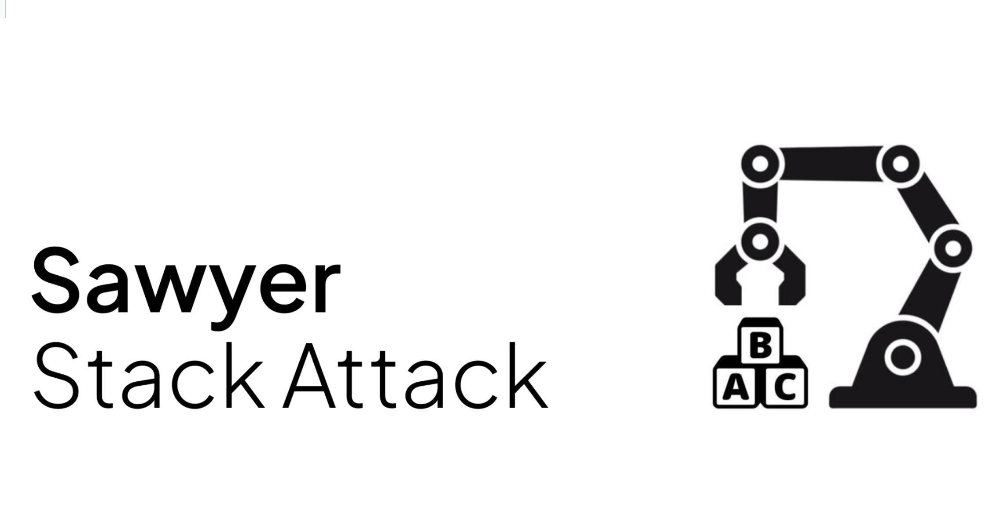
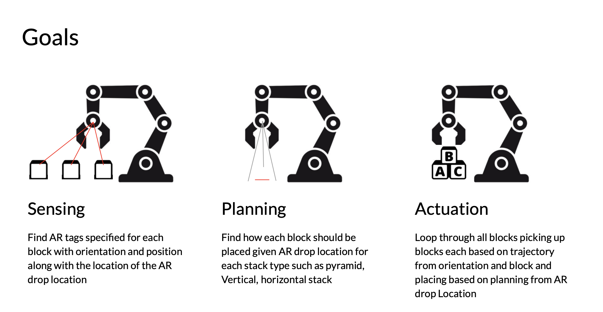

This project is a group effort of Kamoni Fletcher, Samantha Flores-Eulloqui, and Tan Sarp Gerzile
The goal of this project is to stack a group of blocks either as a 2D pyramid (ie no length component) or a vertical tower using Rethink Sawyer robot. The reason we chose to implement this project was because it included all facets of the requirements of 106A project, ie sensing, path planning, and actuation. The interesting parts of the project became apperant later when we started the implementation. Although it seems like a trivial task, we needed to solve a lot of problems. We chose to start blocks from a random initialization, which means that all the blocks sitting on the workspace has random orientation and translation. As can be seen from the figure below, in order to stack the blocks in a successful fashion, they all need to have the same orientation first. Thus, the first problem that we needed to solve was to find the orientations (yaw) of each block after detection. Additionally, to pick the blocks up, we needed to implement path planning algorithms similar to lab 7. Additionally, in order to prevent jerky motion of the arm, we also needed to implement control. After the implementation of all these functions, we also needed to make precise adjustments so that the project worked as intended. As a result, the most interesting part of this project for us was the implementing a full-stack robot application from scratch, which simulated a real world industrial robotics environment for us. Although it was frustrating from time to time, being able to complete the project was worth the frustration.

Although the end-goal of this project is quite simple for any real world application, as with any other class project, one thing that we thought of was a volume constrained stacking of boxes for optimal packaging for an industrial setting like Amazon Robotics using Integer Linear Programming. Assume that we have a container with fixed dimensions. We have a set of boxes of different known dimensions. A robotic arm must place a subset (or all) of these boxes into the container without overlap and respecting container boundaries. We want to determine which boxes to place, how to orient them, and their exact positions. The key points of such applicatioin are: 1) Boxes can be oriented in different ways (rotating the around the three axes not just yaw). 2) Boxes must fit entirely within the container. 3) Boxes cannot overlap. 4) We may want to maximize the number of boxes placed or minimize the unused space. We can use Integer Linear Programming (ILP) to solve this problem. If you took CS 170, you know that ILP provides a powerful and flexible framework for formulating and solving combinatorial optimization problems with strictly integer solutions as opposed to linear programming The geometric of constraints of fitting boxes inside a container and enuring no overlaps can be represented using linear inequalities. ILP allows for a straightforward transtition of these geometric relationships into linear constraints. Additionally, deciding whether to place a box and in which orientation are inherently binary. ILP naturally incorporates binary variables to represent such decisions, providing a direct and intuitive link between the model's variables and the real world decisions. Actually, using linear programming to minimize a container like volume using different shaped blocks, was a goal of our project, but we later decided that we wouldn't have been able to implement it because it had just too many deliverables and we didn't have the time to implement such project, but then again, we will describe and formulate a model here to demonstrate how this problem could be solved. The container that we are placing the boxes has known dimensions (W, L, H) and we have N boxes with different and known dimensions, we wish to formulate an ILP model to find a solution to this system. Once the ILP solver finds a solution, we hae the exact positions and orientations of the boxes. These can be fed into the respective motion planning module of a robotic arm, enabling the arm to pick and place each box in the specified location. For a brief description of this model checkout this link.
For design description of this project, please check this link out.
For implementation details of this project, please check this link out.
We worked hard to get the implementation correct, the results for pyramid stacking are available through this link and the results for vertical stacking are available through this link.
The results perfectly mathces the design and implementation criteria. However, the implementation isn't as robust as we'd like to, in fact it took multiple iterations to get the results in the video. Early challanges were getting the yaw adjustments before picking up the block to avoid moving blocks and AR tags not being seen. Later challanges were not bbeing able to adjust the Z axis because it is always rest to match the height of the table, robot getting weird trajectory and being twisted up after picking up the block so we had to come up with a tuck to undo it and be able to place from a more desirable starting position, and jerking of the robot due to controller. We also faced a lot of hardware issues when testing. The biggest flaw of this current execution is the fact that blocks don't have pick up positions, which interfere with the execution flaw, which results in sometimes overlapping trajectories. A solution to that is, after picking up each block, placing them in a predetermined position to clear up the workspace, especially around the center position, and then safely placing blocks around the center, but we couldn't implement this because we didn't have time.
Samantha Flores-Eulloqui: Samantha is a final year EECS major. Her main contributions include making a scan function that would tuck the arm for us to go through all AR tags within that frame and get their position, calculate the yaw and store them within a dictionary. Another contribution she made was making a vertical stack for any n blocks detected. Like the other partners, she also worked on debugging the code when we ran into the issu of the sawyer not begin able to rotate the end effector after placing the first block by macking a function that would reset the joint angles.
Kamoni Fletcher: Kamoni is a final year EECS major. His main contributions came from the development of the basis for stacking. He began with helping facilitate the creation of vertical stacking which we used for the back bone of filling out the rest of the stacking function. He helped with assisting the team in debugging the joint way points errors for speeding up the gripper close, and helped with debugging the custom tuck that we created for better resolution of the blocks.
Tan Sarp Gerzile: Tan is a final year CS major. His main contribution was to develop the system to get the yaw adjustments and implementing control. Additionally, he developed the skeleton code for pyramid stacking, which we later had to debug a lot. As the other members, he was instrumental in debugging. He also worked on getting the custom tuck correct and having better AR detection for the blocks.
In conclusion, all the members had equal contribution in the development of this project.